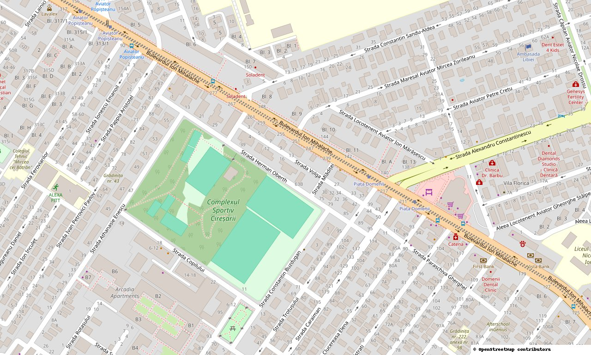
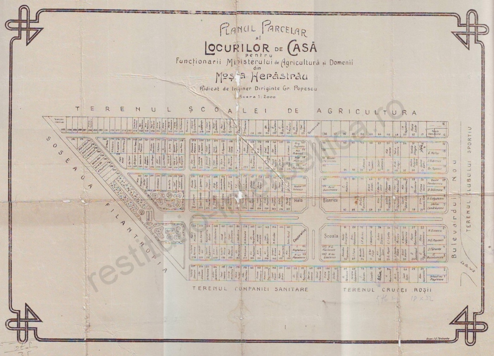
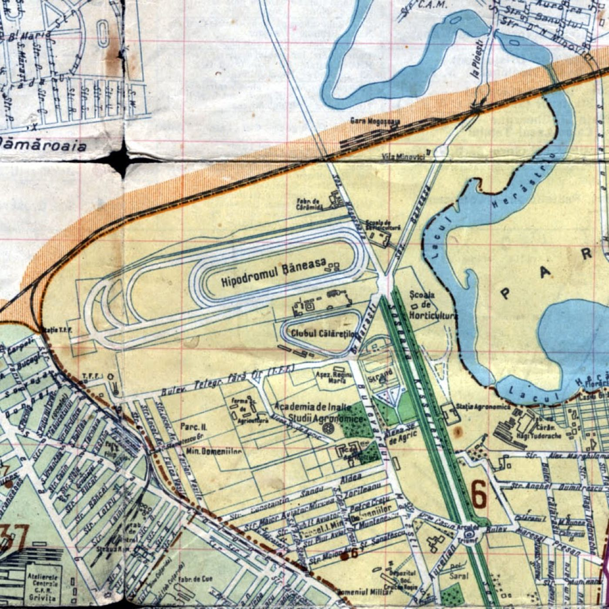
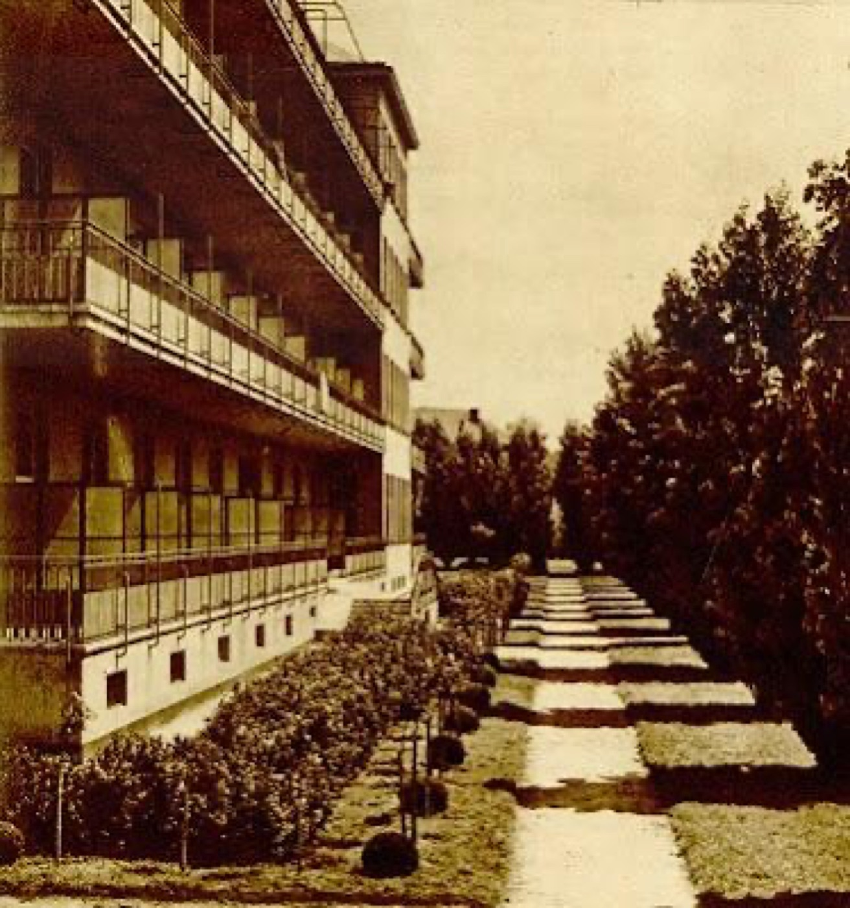
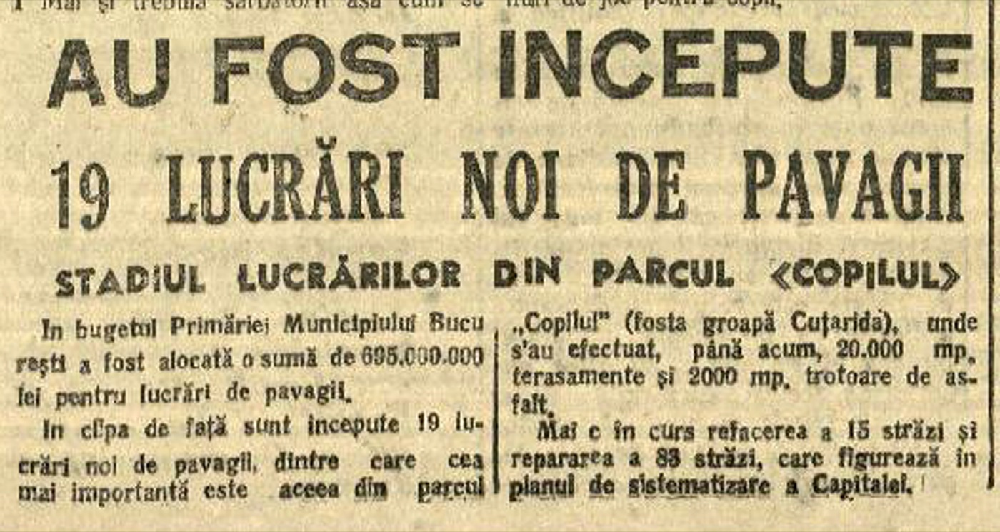
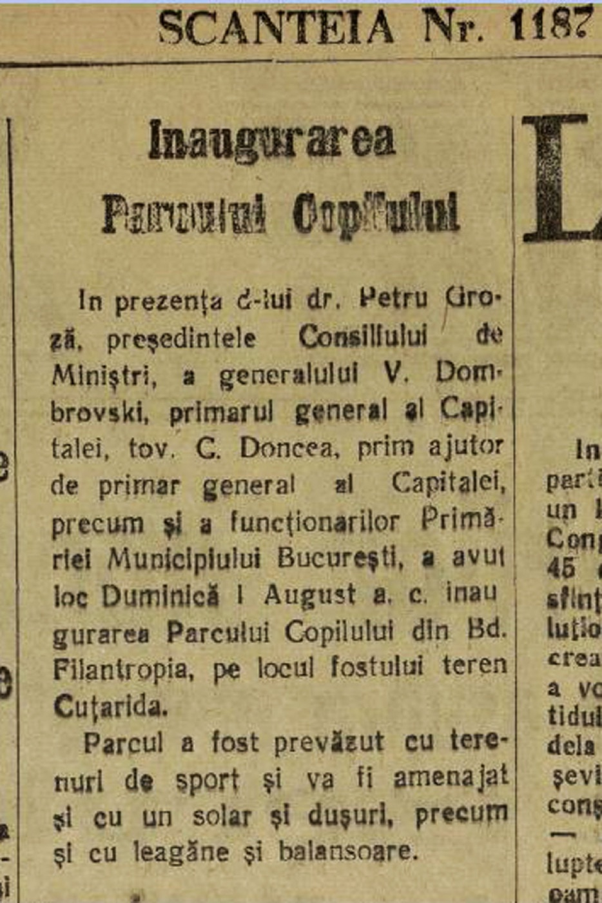
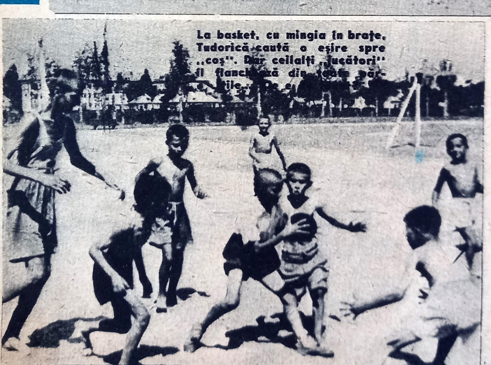
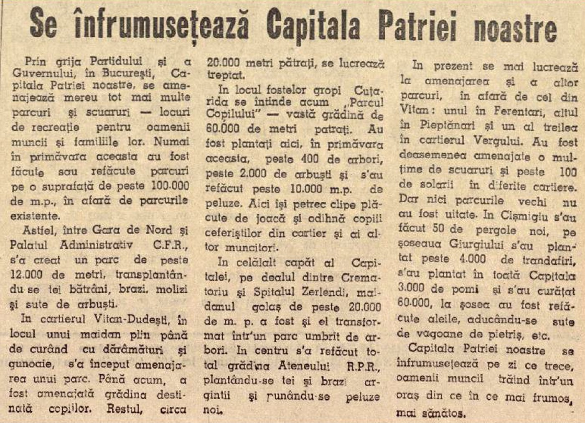
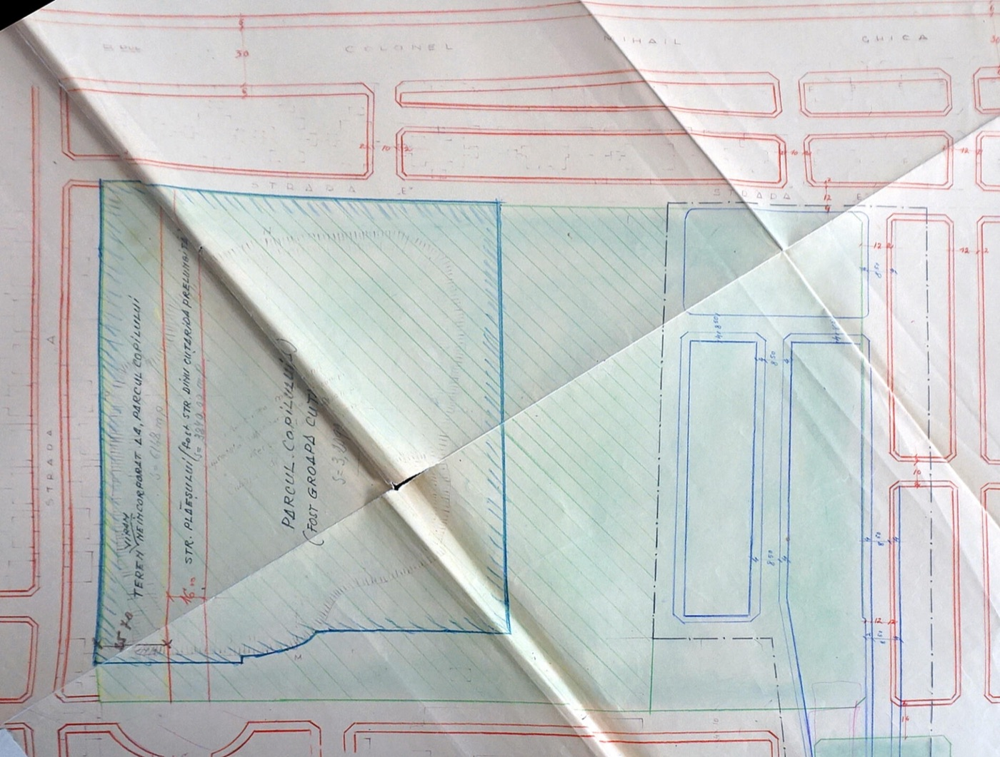
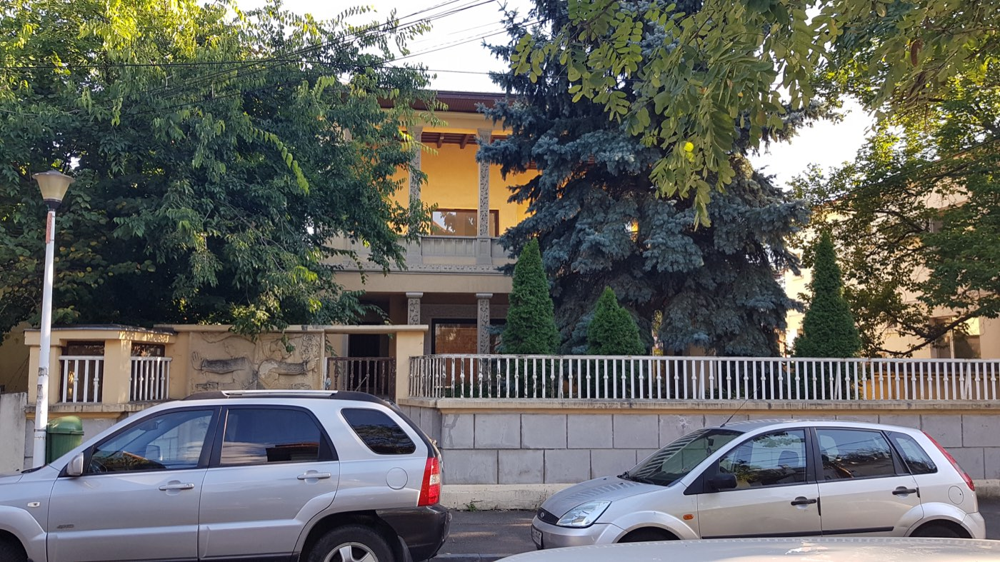

De la gropile de lut ale cărămidăriei Cuțarida la stadionul de rugby al Griviței, la baza sportivă închisă a Clubului Copiilor și la lupta vecinilor din Domenii pentru redeschiderea ei. Cronologie 1884–2026, cu fotografii și surse.

Cartierul își trage numele de la Ministerul Domeniilor, pe ai cărui funcționari i-a împroprietărit. Viitorul parc nu se afla în parcelare, ci la marginea ei de vest, spre Calea Griviței și Atelierele CFR.
Parlamentul atribuie Casei Regale 12 domenii. În 1889–1891 se creează Ministerul Domeniilor (Gr. Păucescu).14
Ing. Grigore Popescu întocmește planul de parcelare pentru circa 7 ha din moșia Herăstrău. Loturile sunt destinate exclusiv funcționarilor Ministerului Domeniilor.15167
Primele loturi se vând imediat după Primul Război Mondial.15
Planul ajunge la Consiliul Tehnic Superior (dosar 166/1923) și este aprobat: 301 loturi cu front de 18 m, iar strada principală, Al. Constantinescu, are 30 m lățime. Semnează Cincinat Sfințescu, șeful Casei Lucrărilor.14
Comisia Tehnică constată construcții neautorizate. Urmează a doua etapă, pe străzile Popișteanu, Fuică și Traian Vasile.14
Se ridică vile Art Deco și moderniste: o casă proiectată de arh. R. Michaescu (1932) și un imobil cu turnuri vitrate al arh. Alexandru Zamphiropol (1933). Mai lucrează aici Ionescu-Berechet, Pandele Șerbănescu și Victor Asquini.910
Arh. Horia Creangă construiește casa Dimancescu de pe str. Aviator Sănătescu 50, cu „fațadele inversate”. Tot atunci arh. Nicu Georgescu ridică Hala Domenii.81540
Doar un sfert din loturi erau construite. Pe celelalte se pășteau oi. Prin Piața Domeniilor trecea o cale ferată industrială, iar tramvaiul 19 avea capăt în apropiere.7



Locul parcului era o groapă uriașă, rămasă după extragerea lutului pentru cărămizi, la marginea „Comunei Militari”, între Piața Domeniilor și linia ferată spre Constanța.
Ing. Nicolae Cuțarida (1854–1929) înființează „fabrica sistematică” de cărămidă de lângă Calea Griviței și Filantropia. Din 1913 produce și tuburi de beton.112
Cuțarida se îndatorează: ipotecă de 122.000 lei (1911), obligație de plată (1913) și scoaterea la licitație a proprietății de la Bariera Griviței nr. 304 (1914), după ce parcelase 140.000 mp.11
Groapa este cedată fraților Goldemberg și exploatată „fără acte”.12
Terenul ajunge la Uzina Metalurgică Grivița, care cere autorizație să construiască locuințe.12
Comisia de sistematizare refuză cererea și rezervă terenul pentru grădini și parcuri.12
Pe harta orașului apare „Fabrica de Cuie” Cuțarida, lângă groapă.2
Uzinele Comunale București încep să umple groapa, din ordinul primarului.12 Reportajul din 1949 spune că groapa fusese pusă „la dispoziția salubrității”, care aducea aici gunoaiele orașului, iar „cei a căror sănătate era amenințată erau muncitorii din vecinătate”.1
Reportajul din 1949 pune alături „Gropile lui Ouatu” (fabricantul englez Watt), umplute cu pământul scos de STB pentru linia 19 de pe bd. Mihail Pleșoianu, și groapa Cuțarida, „vecin de domeniu cu Watt”. Unele articole recente le confundă. Groapa lui Ouatu se afla spre Podul Grant, iar romanul Groapa al lui Eugen Barbu este asociat de surse cu zona Cuțarida.16426
Încep lucrările de amenajare. Ministerul Educației folosește în comunicatele sale 1947 ca an al inaugurării.2312
România Liberă scrie despre stadiul lucrărilor din „parcul «Copilul» (fosta groapă Cuțarida)”: 20.000 mp de terasamente și 2.000 mp de trotuare de asfalt.13
Inaugurarea „Parcului Copilului din Bd. Filantropia, pe locul fostului teren Cuțarida”. Sunt prezenți dr. Petru Groza, gen. V. Dombrovski (primarul general) și C. Doncea. Parcul are terenuri de sport, iar în program erau un solar, dușuri, leagăne și balansoare (Scînteia nr. 1187, 3.08.1948).13
Hugo Conu scrie despre „Parcul Copiilor” în Realitatea Ilustrată.12
Viața Capitalei: „Anul trecut, situația s-a schimbat. Umplerea gropii — de astă dată cu pământ sănătos — a fost accelerată și, în locul ei a răsărit un parc, închinat tinerelor generații — parcul copiilor.” Reporterii îl găsesc însă „o grădină pârjolită de arșița soarelui” și cer iluminat pe timp de noapte și pavarea străzii Stalingrad din fața lui.1
Scînteia include parcul în seria „Se înfrumusețează Capitala Patriei noastre”. În noiembrie 1950, România Liberă scrie despre lucrările din raionul Grivița Roșie.13
La cererea Atelierelor CFR Grivița Roșie (23.02.1952), Sfatul Popular transmite 60.500 mp din Parcul Copilului Ministerului Transporturilor, cu condiția ca circa 35% din suprafață să fie plantată (Arhivele PMB, dosar 76/1952).12
„Gropile Cuțarida sunt astăzi o amintire… Iarbă, pomi, bănci, aparate de gimnastică au fost aduse, schimbând fundamental aspectul întinsului teren.”Viața Capitalei, 1949, p. 3 1
Ministerul Educației (2022) vorbește de o inaugurare „în 1947”. Site-ul Mica Ceferiadă dă data de 1.06.1948. Sursa de epocă, Scînteia din 3 august 1948, consemnează inaugurarea oficială „Duminică 1 August a.c.”, iar 1 august 1948 a fost într-adevăr duminică. Reportajul din 1949 („anul trecut”) confirmă anul 1948. Concluzie: lucrările au început în 1947, iar inaugurarea oficială a fost pe 1 august 1948.





Din 1952, fostul parc are două părți. Pe latura de est, Atelierele CFR construiesc stadionul de rugby al echipei lor. Pe latura de vest rămâne parcul de joacă și sport pentru copii, care trece la Ministerul Educației și primește în anii ’80 numele „Cireșarii”.
Ia ființă secția de rugby CFR (decizia FRR din 25.07.1932). Primele antrenamente se țin pe terenul „Triunghi” de lângă liniile ferate.12
Prin muncă voluntară, organizată de directorul Atelierelor, Dumitru Miron, se fac gardul, terenurile și vestiarele, care există și astăzi. Terenul mare servea alternativ pentru fotbal și rugby și era înconjurat de o pistă cu 4 culoare, acoperită cu zgură de la locomotive. Baza mai avea teren de antrenament, baschet, volei, tenis, sectoare de atletism, o cabană și tribune.12
Grivița (pe atunci Locomotiva) joacă pentru prima oară rugby pe „Stadionul Parcul Copilului”. Clubul a câștigat titluri naționale în 1955, 1957–1960, 1962, 1966, 1967, 1969–70 și 1992–93, plus Cupa Campionilor Europeni FIRA în 1964.1249
„Parcul Copilului” apare pe harta Bucureștiului. Calea ferată industrială prin Piața Domenii se desființează.27
Grivița Roșie – Progresul București 56–6, meci filmat pe acest teren.56
Parcul de copii trece în administrarea Ministerului Educației și Învățământului. Sursele dau ani diferiți: 1972 (Gândul, Puterea, Mica Ceferiadă), 1974 (Newsweek, Buletin de București) și „circa 30 de ani după 1947” (Digi24).46236
Odată cu „Daciada”, se construiesc terenuri de sport, o sală de gimnastică și terenul de fotbal. Dispar florile și o alee de la intrare (data e nesigură și la autorul blogului).2
Se aduc figurinele mari din tablă (Motanul Încălțat, Mickey Mouse, clovnul, chioșcul-dovleac), un tren cu locomotivă și două vagoane, un tobogan-rachetă, un mic lac, o pistă de popice și mese de ping-pong. După 1985 se construiesc scena și poarta-„castel” de la intrarea din str. Hermann Oberth.3
Apare numele „Cireșarii”. Ghidul străzilor din 1982 îl folosește deja. Legătura cu romanul lui Constantin Chiriță (1956) sau cu serialul TV din 1972 este plauzibilă, dar nicio sursă nu o confirmă.2556
Clubul Grivița Roșie își serbează în Parcul Copilului 50 de ani de existență. Vorbește ing. Ioan Grigore Lăzărescu, fondatorul echipei din 1932.12
Ministerul a avut bani doar pentru un gard de sârmă.33 Între 1998 și 2005 parcul ajunge distrus și neîngrijit. „Castelul” de la intrare e vopsit în albastru, cu inscripția „Ministerul Educației și Cercetării – Clubul Copiilor Nr. 1 – Complexul Sportiv Cireșarii”.2
Harta „Ghidul Bucureștiului” îl numește „Parcul Sportiv Cireșarii”.2
Vecinii trimit plângeri la autorități. PMB cere Guvernului să treacă parcul la Primăria Sectorului 1.4
Accesul se restrânge la membrii Clubului Copiilor (Agerpres, Digi24; Puterea indică împrejmuirea în 2008). ONG-ul Eco-Civica sesizează Garda de Mediu pentru construcții ilegale și tăieri de copaci. Sutu.ro publică „Au murit Cireșarii” (31.08.2007). Gândul scrie în 2008 că „administratorul bazei sportive Cireșarii” a fost reclamat la Primărie.2426
Comparația imaginilor satelitare arată copaci tăiați la capătul terenului de fotbal, o parcare betonată în fața sălii, construcții noi pe spațiul verde și locurile de joacă demontate, cu nisipul înlocuit de beton.5
Metropotam publică „Necrolog: A fost odată Parcul Cireșarii”. Articolul nu mai este online, pentru că domeniul a dispărut.4
Apare blogul parculciresarii.wordpress.com, care adună istoria parcului, petiții și articole. Grivița sărbătorește 20 de ani de la ultimul titlu cu un meci de old-boys pe terenul din Parcul Copilului (10.06.2013).250
În aceeași perioadă, cartierul vecin, de care parcul este legat prin comunitate și prin numele Pieței Domenii, intră sub regim de protecție, dar este afectat de derogări și construcții ilegale.
„Parcelarea Domenii” devine zona protejată nr. 73 prin HCGMB 279/2000 și este reglementată prin HCGMB 34/2009 (PUZ pentru zonele construite protejate, una din cele 12 zone-pilot). Regulamentul cere ca noile clădiri să respecte scara celor existente și interzice pereții-cortină, metalul lucios și culorile stridente.1719
Pe Sandu Aldea 24, un PUZ aprobat de CGMB (2007) și autorizat de PS1 (2008) permite un bloc P+4 în loc de P+2: POT 40→51%, CUT 1,8→2,7, înălțime 10→18 m. Apar și alte blocuri P+4–P+5 pe Sandu Aldea 4–6 și Al. Constantinescu 6, 8 și 20.17
Demolare ilegală a casei protejate de pe Aviator Sănătescu 37.61 Din octombrie 2009, avizele pentru zonele protejate se dau numai la PMB.19
HotNews publică „Cum a fost mutilat cartierul Domenii”. Casedeepoca scrie că zona este protejată „conform hotărârilor municipale”, dar e afectată de dezvoltatori și de renovări „vulgare”.179
Valabilitatea de 10 ani a PUZ-ului (HCGMB 34/2009) expiră. USR acuză că neprelungirea lui înseamnă „abuz în serviciu”.18
Cartierul împlinește 100 de ani (reportaj B1TV).20
Piața Domenii: circa 44 de procese-verbale de desființare. Chioșcurile și arcada metalică nu au autorizație, iar arcada face obiectul unui dosar penal. Modificările halei (Mega Image în 2019, apoi „Gusturi Românești”) nu au aviz de la arhitectul-șef.2122
Valentin Mandache organizează un tur Art Deco în Domenii, „zonă de protecție arhitecturală” construită între începutul anilor 1920 și sfârșitul anilor 1950.10

Digi24, „Parc cu acces limitat”: circa 30.000 mp și 7 terenuri încuiate. Grupul civic propune abonamente, iar consilierul general Cătălin Câmpeanu inițiază proiectul de transfer.36
CSM București vrea să construiască aici un teren de rugby cu 2.000 de locuri, pistă de atletism, sală de 2.500 de locuri, bazin și hotel sportiv. CGMB votează cererea de transfer, iar Guvernul o refuză.6927
CGMB cere din nou transferul și invocă „valorile culturale” ale locului, inclusiv romanul Groapa al lui Eugen Barbu. Imobilul figura atunci ca „Clubul Copiilor Sector 1 – Baza Sportivă Cireșarii”, în domeniul public al statului.26
Se formează grupul „Părinți de Cireșari”: prima acțiune pe 9.08.2018, petiția „Deschidem Parcul Cireșarii” și manifestul „#cireșarcautparc” pe 8.08.2020.57
Primarul Clotilde Armand anunță acordul cu ministrul Monica Anisie ca PS1 să preia administrarea.2762
Armand acuză public firma Eadoris România (Claudiu Laurențiu Barbu, membru în consiliul de administrație al bazei, propus ca „sponsor”) că blochează preluarea. Sunt acuzații politice, nedovedite, și nu se știe ce s-a ales de oferta de „sponsorizare”.28
Ministrul Sorin Cîmpeanu și Armand anunță un parteneriat: igienizarea a peste 31.000 mp, un teren multifuncțional prin CNI (evaluat la 2.982.421 lei) și un concurs de peisagistică. Asociația se opune explicit unui „hotel sportiv”. Daniel Trifu (Eco-Civica) spune că baza fusese lăsată intenționat în paragină.242932
Voluntari de la USAMV curăță cele 3 hectare. Pe 4.09.2021 are loc „Ziua Curățeniei în Cireșarii”, organizată de comunitate.3157
Terenurile de tenis și handbal sunt „reamenajate” cu copacii lăsați pe suprafața de joc.33
Printr-un ordin al ministrului Educației, 1.508 mp din bază sunt predați CNI pentru o „bază sportivă tip 2”: teren multifuncțional handbal/baschet/volei/tenis, vestiare de peste 150 mp și nocturnă. Clubul trebuie să o întrețină cel puțin 15 ani. USAMV a făcut pro bono terenul de fotbal cu gazon natural, drenaj și irigații.233435
Baza se redeschide publicului de Ziua Copilului, cu evenimentul „Jocurile copilăriei”. Program: luni–vineri 15–20, sâmbătă–duminică 8–20 (G4Media: 10–20). Clubul are circa 2.000 de elevi în 19 cercuri.23
Digi24, „Statul la stat”: terenurile de tenis sunt în stare avansată de degradare, iar terenul de fotbal făcut de USAMV nu e încă folosit. Directorul clubului câștigă 9.147 lei pe lună.37 BZI contestă meritul primarului în redeschidere.63
Scandalul panourilor: o expoziție cu 9 panouri despre Pacepa, Eugen Barbu și Ștefan Foriș este retrasă după reacții publice. Sursele nu spun la fel cine le-a retras.3839
B365: accesul e permis doar în zona marcată, terenul de tenis renovat e încuiat, iar terenul alăturat „este privat și a fost vândut împreună cu fabrica Grivița”.40 În octombrie 2023, asociația spune că s-a opus tăierii a 68 de arbori.41
Blogul Parcul Cireșarii: „După mai bine de 10 ani, s-a deschis cu greu pentru public o bucățică de parc, într-un colț, cu program.”6
Consiliul Local Sector 1 votează (20 de voturi „pentru”) cererea de transfer pentru 34.300 mp, conform CF. Primarul George Tuță anunță un complex cultural-sportiv.42
CGMB votează în unanimitate (46 de voturi) cererea către Guvern.4344 Pe lista CNI, „Construire bază sportivă TIP 2, Str. Oberth Herman nr. 2” figurează cu valoarea 0 lei, deci lucrarea nu a început.67
Se dă aviz pentru defrișarea a 72 de arbori, cu plantarea compensatorie a 82 de arbori până în august 2027.45
Controlul pe teren constată că au fost tăiați doar 24 de arbori și că nu s-a plantat nimic. Mai mulți arbori sunt uscați sau înclinați periculos. Asociația propune un parteneriat pentru un grant de 15.000 € de la Fundația Comunitară București (reîmpădurire și o cișmea „ca în planurile vechi”) și nu primește răspuns.454647
OUG 15/2026 descentralizează bazele fostului Minister al Tineretului și Sportului, dar nu și Cireșarii, care ține de Ministerul Educației. Petiția are aproape 1.000 de semnături și o scrisoare deschisă către premier (nr. 8939).4857
Situația actuală: baza este tot în domeniul public al statului, administrată de Clubul Copiilor Sector 1 (Ministerul Educației). Transferul către PS1 sau PMB nu a fost aprobat de Guvern, iar terenul CNI nu a fost construit. Pe portal.just.ro nu apare niciun litigiu funciar sau de retrocedare, doar procese salariale ale angajaților clubului (2023–2025).48
Partea de est a fostului parc, cu terenurile de rugby, nu ține de Ministerul Educației. Rămasă la Atelierele CFR Grivița, a trecut odată cu privatizarea lor în proprietate privată. RC Grivița (12 titluri naționale, Cupa Campionilor Europeni în 1964) își joacă și azi meciurile aici. Pe OpenStreetMap, poligonul complexului are circa 61.600 mp, aproape cât cei 60.500 mp cedați CFR în 1952. Actul de separare nu a fost găsit.6540
Festival AMRB U8–U12: 400–500 de copii din 17 cluburi „pe cele două terenuri ale Rugby Club Grivița”.51
Placa „Rugby Club Grivița 1932–2002” este montată în parc. În 2022 clubul împlinește 90 de ani și revine în prima ligă, susținut de Atelierele Grivița.125249
Clubul găzduiește evenimentele comunității: Egg Hunt pe terenul de rugby (2022, 2023, 2025), antrenamente pentru copiii din cartier (mai 2023), o grădină și un compostor comunitar.57
Festivalul „Cristache Mitrea”, ediția a 7-a: peste 500 de copii pe stadionul Parcul Copilului.53
Grivița – Sportul Studențesc, în Divizia Națională de Seniori, pe „Stadionul Parcul Copilului”. Pe 24.10.2026 este programat aici Grivița – Poli Iași.54
Stade Toulousain organizează un stagiu pentru U12–U16 cu RC Grivița „pe terenul de rugby din Parcul Copilului”.55
Grupul civic a pornit în 2018 (prima acțiune: 9.08.2018), sub numele inițial „Grupul Civic Domeniile Cireșarilor”, și s-a înregistrat ca asociație în 2020. Președintă este avocata Elena Lucaci, iar membrii fondatori sunt Ana-Maria Malache, Oana Marin și Andreea Derscanu. Are 70–100 de familii active.575840
Notă: pagina de Facebook a asociației nu poate fi citită fără cont. Informațiile vin de pe site-ul parintideciresari.ro, care își publică postările ca fișiere de date, și din presă.